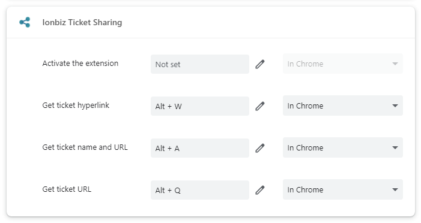

Basic usage
- Install the browser extension.
- Pin the browser extension to the top right toolbar.
- Go to an Ionbiz subdomain url (*.ionbiz.com).
- View a ticket detail.
- Left-click on the extension's icon.
- A feedback message will pop up.
- If successful, the ticket info will have been copied to your clipboard.
- Share the ticket info by pasting it somewhere.
Output formats
There are multiple output formats available.
- Ticket URL: Displays the ticket URL.
- Ticket hyperlink: Displays the ticket name and url as a hyperlink.
- e.g., 12345 Ticket name
- Ticket name and url: Displays the ticket name and URL.
- e.g., 12345 Ticket name (https://example.ionbiz.com/Issue/Index/1)
It's possible to update the default output format.
- Right-click on the extension's icon.
- A context menu will popup.
- Select an ouput format.
- A feedback message is displayed.
- The selected output format was set as default.
Shortcuts
You can set an output format for the default action or for other output formats.
